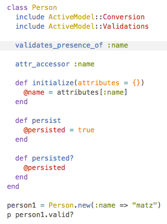
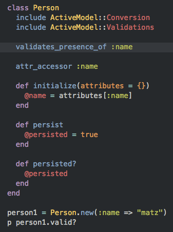

Next 主题进阶
阅读书签
允许用户保存阅读进度。用户只需单击页面左上角的书签图标即可保存滚动位置。当下次访问博客时，可自动恢复该页面的打书签的位置
1 | bookmark: |
字数统计与阅读时长
安装插件:
1 | yarn add hexo-symbols-count-time |
配置:
主题配置文件:
1 | symbols_count_time: |
站点配置文件添加:
1 | # 新增文章字数统计 |
进度
1 | # 浏览进度 |
图片延迟加载
访问到图片位置时才请求图片资源，可提高博客的访问速度
开启配置:
1 | lazyload: true |
图片灯箱
添加灯箱功能，实现点击图片后放大图片，支持幻灯片播放、全屏播放、缩略图、分享等
开启配置:
1 | fancybox: true |
代码高亮主题
NexT 使用 Tomorrow Theme 作为代码高亮，共5款主题可供选择。 默认使用的是 白色(normal) 主题，可选值有 normal，night， night blue， night bright， night eighties
normal:  night: 
night blue:  night bright:
night bright: 
night eighties: 
1 | codeblock: |
代码块复制按钮
1 | codeblock: |
Hexo进阶
博文
在 $blog/scaffolds/ 中定义了多个模板，在新建文章时，Hexo 会根据 scaffolds 文件夹内相对应的文件来建立文件
官方默认模板:
post: 不指定模板时默认使用(由$blog/_config.yml中的default_layout参数控制默认值)，创建的文件将放在source/_postsdraft: 草稿模板,避免写到一半的文章被发布,创建的文件将放在source/_draftspage: 给站点添加子模块面页(如分类模块,分类模块,关于模块),创建的文件放于source/
draft 布局用于创建草稿，source/_drafts下的文档不会渲染到网站中，当文章需要数天才能完成，建议使用草稿模板布局
也可将新建文档时的默认布局设置为 draft，每次创建的默认布局都将时草稿
1 | - default_layout: post |
如需渲染草稿使用: hexo server --draft
将草稿发布为正式文章: hexo publish [layout] <filename> ，命令会将 $blog/source/_drafts 下的文章移动到 $blog/source/_posts （用 mv 也可以)
新建模板:
想实现发不同类型的文章，比如娱乐、技术等，可先创建需要的模板，通过 hexo new [layout] <title> 新建该模板布局(layout)的文章，文章会默认被创建在 source/_posts 中
新建一个模板只需在 scaffolds 下创建一个模板文件即可，Hexo 默认安装了 hexo-renderer-marked 和 hexo-renderer-ejs 因此不仅可以用 Markdown 写作，还可以用 EJS 写作,即可创建 md 和 ejs 扩展名的模板。如果安装了 hexo-renderer-pug，甚至可以用 Pug 模板语言书写文章
1 | --- |
属性：
title：定义了博文的标题date：定义了创作此博文的时间tags：定义了博文的标签categories：定义了博文的种类
Hexo 默认以标题做为文件名称，可编辑 new_post_name 参数来改变默认的文件名称，举例来说，设为 :year-:month-:day-:title.md 可方便通过日期来管理文章。
| 变量 | 描述 |
|---|---|
:title | 标题（小写，空格将会被替换为短杠） |
:year | 建立的年份(4位)，如， 2015 |
:month | 建立的月份（2位），如， 04 |
:i_month | 建立的月份（无前导零），如， 4 |
:day | 建立的日期（2位），如， 07 |
:i_day | 建立的日期（无前导零），如， 7 |
博文用资源
资源（Asset）代表 source 中除了文章以外的所有文件，如图片、CSS、JS 文件等。若 Hexo项目中只有少量图片，那最简单的方法就是将它们放在 source/images 文件夹中。然后通过  访问,若图片很多可以考虑使用图床
当某个文章要引用一些特定资源时，可开启文章资源文件夹到目的，在创建文章的同时创建一个同名文件夹用于存放资源
1 | post_asset_folder: true |
然后就可用 Hexo 的标签插件调用资源
1 | {% asset_path <slug> %} |
如将图片 example.jpg 放入资源文件夹中，可通过以下标签插件引用:
1 | {% asset_img example.jpg This is an example image %} |
hexo-renderer-marked 3.1.0 引入了一个新选项，无需使用 asset_img 标签插件即可将图片嵌入markdown:
1 | post_asset_folder: true |
然后通过使用  引用资源文件夹中的内容
永久链接
1 | yarn add hexo-abbrlink |
1 | - permalink: :year/:month/:day/:title/ |
代码块进阶
1 | ``` [language] [title] [url] [link text] |
各参数如下：
langugae：语言名称，引导渲染引擎正确解析并高亮显示关键字title：代码块标题，显示在左上角url：链接地址，如果没有指定 link text 则会在右上角显示 linklink text：链接名称，指定url后有效，会显示在右上角url必须为有效链接地址才以链接的形式显示在右上角，否则将作为标题显示在左上角。
以url为分界，左侧除了第一个单词会被解析为language，其他所有单词都会被解析为title，而右侧的所有单词都会被解析为link text。 如果不想填写title，需要在language和url之间添加至少三个空格